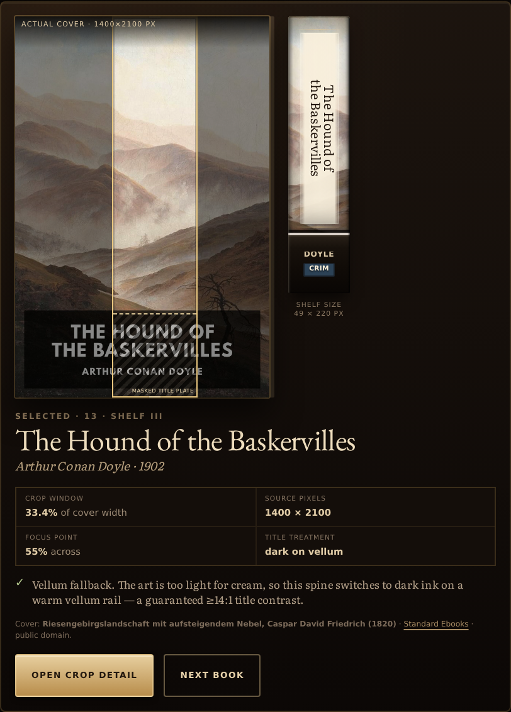

Full-bleed
AutoVia App renderersThe spine shows 33.4% of the cover width at a 55% focus point. Because the painting is light, the automatic luminance pass picks dark ink on a warm vellum rail. User-verified through the App renderers APK on a real device.
1400 × 2100 source49 × 220 px spineVellum fallback